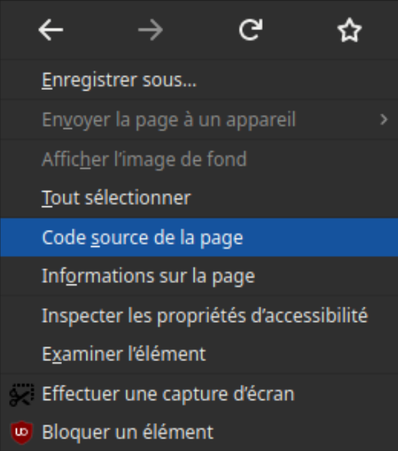

Il suffit de faire un clic droit sur la page et de sélectionner «Code source de la page» ...

Et sélectionner «Examiner l'élément» pour modifier en direct le code source... et corriger une éventuelle erreur...